Sarracenia, commonly known as pitcher plants, are carnivorous wetland flora native to North America that thrive in sunny, wet, nutrient-poor habitats (Horner). Sarracenia may be of interest to people because their predation strategies can have indirect as well as direct impacts on the population dynamics and community structure of freshwater plankton and bacterial communities due to their interactions at higher trophic levels which control bacterial densities and community structure (Cochran-Stafira). Sarracenia may also be of interest to people because their carnivorous behavior causes them to not follow the ‘world-wide leaf economics spectrum’ which is defined as an allometric relationship between nutrients, maximal net photosynthetic rates, and physiology (notably leaf size) (Farnsworth and Ellison). The reason their leaf traits diverge from the leaf economics spectrum is due to the fact that carnivorous plants derive most of their nutrients from capturing and digesting prey, implying low photosynthetic rates and low photosynthetic nitrogen and phosphorous use efficiencies (Farnsworth and Ellison). Since prey capture is their main source of nutrient uptake, prey capture is known to be indicative of their fitness in the sense that increased prey capture aids in survival, growth, and reproduction (Horner). Due to the impact on the individual fitness of Sarracenia plants, it is important to understand how Sarracenia traits aid in prey capture as well as how Sarracenia react to changes in the abundance of prey (Horner). Additionally, it is valuable to predict individual biomass of Sarracenia based on morphological, physiological, or taxonomic characteristics because the prediction models offer insight into their growth patterns, resource allocation, and ecological roles, potentially shedding light on larger ecological processes, as well as, how humans can adopt effective management practices. This study investigates the effects of prey availability on photosynthetic rate (Amass), chlorophyll fluorescence, growth, architecture, and foliar nutrient and chlorophyll content of ten pitcher plant (Sarracenia) species. The study questions how prey availability impacts Sarracenia growth and health, as well as, if morphological and physiological allometric relationships of Sarracenia resemble allometric relationships of non-carnivorous plants when nutrients are not a limiting resource. These questions formulated the hypothesis that increased prey availability would stimulate Amass, increase photosynthetic N- and P-use efficiencies, increase relative biomass allocation to photosynthetically efficient, non-predatory phyllodes rather than pitchers, and thereby increase overall plant biomass and reduce stress-related chlorophyll fluorescence.
Methods
Sampling Methods
120 Sarracenia plants ranging from small, intermediate, and large species size were used for the study were collected from the sampling site: Harvard Forest Greenhouse (Ellison and Farnsworth). To conduct the study, plants were fed once a week for 7 weeks straight (Ellison and Farnsworth). Two plants of each Sarracenia species were assigned to one of six feeding levels in a regression design ranging from 0 - 0.25g of finely ground wasps per feeding (for small species), 0 - 0.5g (for species of intermediate sizes), and 0 - 1.0g (for large species) (Ellison and Farnsworth). “Aboveground size” and “Amass” were measured prior to commencing treatments, meanwhile all other parameters were measured during the duration of the study (Ellison and Farnsworth).
Description of data organization and processing
In order to organize the data after reading in the necessary packages, it is important to see what data was measured. To do so, the full data set was read in using the read_csv and the here function, then to make the names of the objects within the data set more clear and too only include the objects of interest the clean_names and select functions were applied. The data set now appears readable with the data set only reporting values observed for totmass, species, feedlevel, sla, chlorophyll, amass, num_lvs, num_phylls
Read in packages
Code
# should haves (from last week)library(tidyverse)library(here)library(janitor)library(ggeffects)library(performance)library(naniar) # or equivalentlibrary(flextable) # or equivalentlibrary(car)library(broom)# would be nice to havelibrary(corrplot)library(AICcmodavg)library(GGally)
Read in the csv file
Code
#read in the dataplant <-read_csv(here("data","knb-lter-hfr.109.18 (1)", "hf109-01-sarracenia.csv")) %>%#make the column names clearclean_names() %>%#selecting the columns of interestselect(totmass, species, feedlevel, sla, chlorophyll, amass, num_lvs, num_phylls)
Visualization of missing observations with an accompanying caption and discussion
Discussion: Given that there are many missing data throughout multiple parameters, it is important to identify where the missing data is so that one can identify where bias potentially is within statistical analysis as it might interfere with results.
Code
#visualize the missing datagg_miss_var(plant)
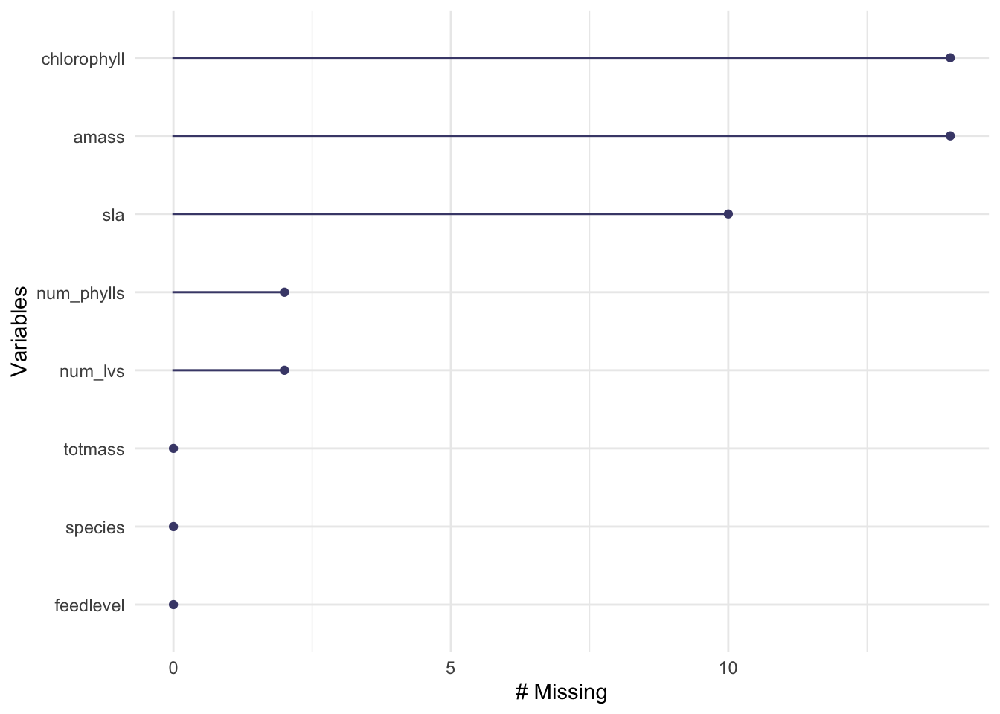
Caption: The gg_miss_var function highlights missing data within the “plant” data set. The plot highlights missing data in the chlorophyll, amass, sla, num_phylls, and num_lvs columns meaning that the only parameters without missing data includes totmass, species, and feedlevel.
Subsetting the data by dropping NAs:
Code
#new data set with dropped NA valuesplant_subset <- plant %>%drop_na(sla, chlorophyll, amass, num_lvs, num_phylls)
Create a correlation plot:
Visualization of Pearson’s correlation between variables with an accompanying caption and discussion
Discussion: After calculating pearson’s r for the different variables within the plant_subset data frame, it was determined that none of the variables have a super strong linear association as the highest correlation value (r) was between amass and sla (0.32). The correlations between sla and feedlevel (-0.3), chlorophyll and sla (-0.22), num_lvs and feedlevel (-0.07), num_phylls and sla (-0.3), and num_phylls and chlorophyll (-0.24) are all negatively correlated; meanwhile, the correlations between chlorophyll and feedlevel (0.16), amass and feedlevel (0.13), num_phylls and feedlevel (0.25), sla and amass (0.32), and sla and num_lvs (0.09) are all postively correlated. It is also worthy to note that there was no correlation between amass and num_phylls (0).
Code
#calculate pearson's r only for numerical values onlyplant_cor <- plant_subset %>%select(feedlevel:num_phylls) %>%cor(method ="pearson")#creating a correlation plotcorrplot(plant_cor,#change the shape of what's in the cells#point to the left=negative relationship, right=positive relationshipmethod ="ellipse",#adds the correlation values in black over the elipsesaddCoef.col="black")
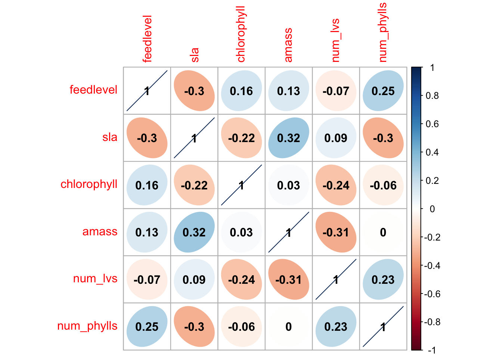
Caption: To determine the relationship between numerical variables in our dataset, we calculcated pearson’s r and visually represented the correlation using a correlation plot. We compared the variables feedlevel, sla, chlorophyll, amass, num_lvs, and num_phylls.
Visualization of relationships between variables (not correlation) with an accompanying caption and discussion
Discussion: After visualizing the relationships between each pair of variables, the ggpair function reveals the different relationships between different varibales depending on the type of data each variable is. Box plots are used to represent relationships between species, categorical data, and the rest of the variables, continuous or discrete. The scatter plots and line graphs highlight relationships between continuous and discrete data.
Create a plot of each variable compared against the others
Code
#visualize the relationships between variables, not correlation plant_subset %>%select(species:num_phylls) %>%ggpairs()
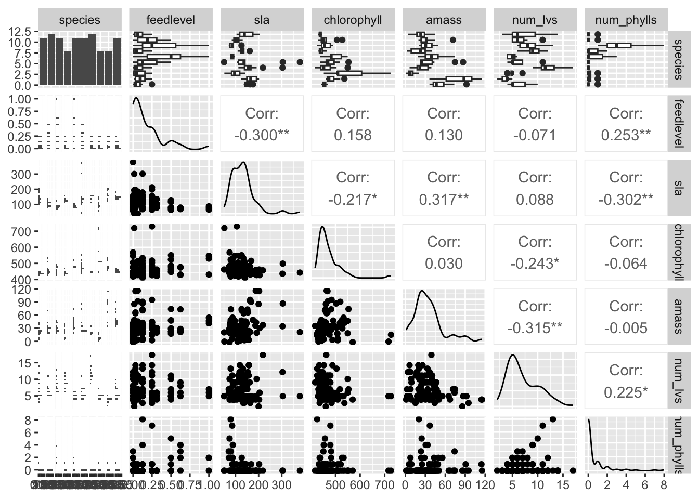
Caption: In order to visualize the relationship between the variables the ggpairs function was applied. The ggpairs function builds a scatterplot matrix that displays scatterplots of each pair of numeric values, while also displaying pearson’s r on the right and the variable distribution on the diagonal.
Starting Regression here:
f. Creating the null and full model with accompanying discussion
To determine how species and physiological characteristics perditc biomass, we fit multiple linear models. The null model creates a regression model that assumes no realtionship between totmass and the predictor variables. On the other hand, the full model creates a regression model that assumes a relationship between totmass and the predictor variables in order to predict biomass.
Code
#create linear regression models for null and full modelnull <-lm(totmass ~1, data= plant_subset)full <-lm(totmass ~ species + feedlevel + sla + chlorophyll + amass + num_lvs + num_phylls, data= plant_subset)
Visual and statistical assumption checks for the full model with accompanying discussion
We visually assesed normaility and homoskedascitity using diagnostic plots for the full model and found that the data is appears normal, but not homoskedastic because the data is not scattered entirely random. We also tested for normality using the Shaprio-Wilk test and found non-normality of residuals. We then retested for homoscedasticity using the Breusch-Pagan test and detected non-constant error variance meaning the data is heteroscedastic.
Code
#check diagnosticspar(mfrow =c(2,2))plot(full)
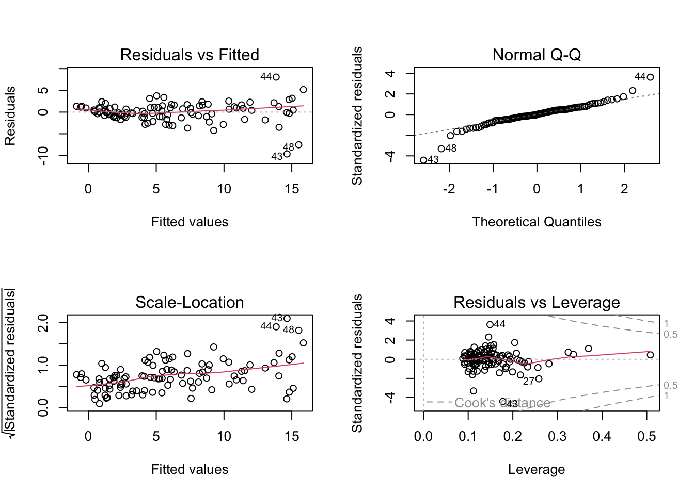
Code
#check assumptionscheck_normality(full)
Warning: Non-normality of residuals detected (p < .001).
Explanation of any transformation and justification
After visually assesing normaility and homoscedascitity using diagnostic plots for the full model, we found that the data appeared to be non-normal and heteroscedasitic. In order to reduce the skewness of variable of interest and achieve normality, we applied a log transformation. Once we did this we were able to manipulate the residuals in a manner that reported normal distribution and homoscedastic variance.
Code
#create linear regression models for log transformation of null and full modelnull_log <-lm(log(totmass)~1, data = plant_subset)full_log <-lm(log(totmass)~ species + feedlevel + sla + chlorophyll + amass + num_lvs + num_phylls, data= plant_subset)#plot and check assumptions plot(full_log)
Code
check_normality(full_log)
OK: residuals appear as normally distributed (p = 0.107).
Code
check_heteroscedasticity(full_log)
OK: Error variance appears to be homoscedastic (p = 0.071).
Model construction with visual and statistical assumption checks for three additional models with justification
To address the question, what set of predictor variables best explains the response, we applied three more linear models using the predictor variables species, feedlevel, and num_lvs. The species variable was chosen as a predictor variable because it is probable that different species have different biomasses. The model comparing species as predictor variable and totmass as the response variable was found to be normal and homoscedastic. The feedlevel variable was chosen as a predictor variable because different feed levels are associated with different nutrient level. Different nutrient levels are indicative of growth and overall health which contributes to individual’s biomass. The num_lvs variable was chosen as a predictor variable because the more leaves an individual has, the more biomass an individual has. The models comparing feedlevel and num_lvs to predict totmass, respectively, both were found to be non-normal, yet homoscedastic.
Model with predictor variable: species
Code
#New linear regression model with species are predictormodel2_log <-lm(log(totmass)~ species, data= plant_subset)
check assumptions for model 2:
Code
#plot the model and check for normality and heteroscedasticityplot(model2_log)
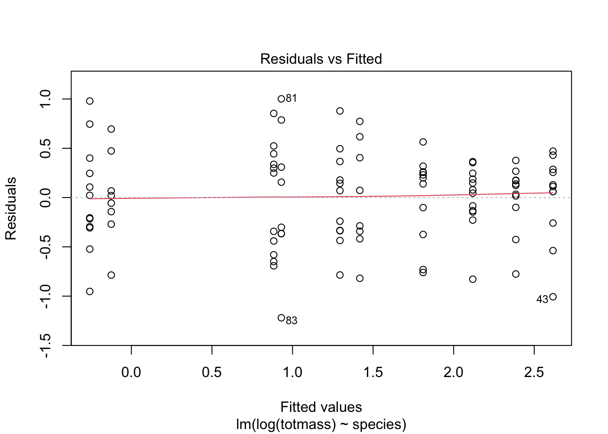
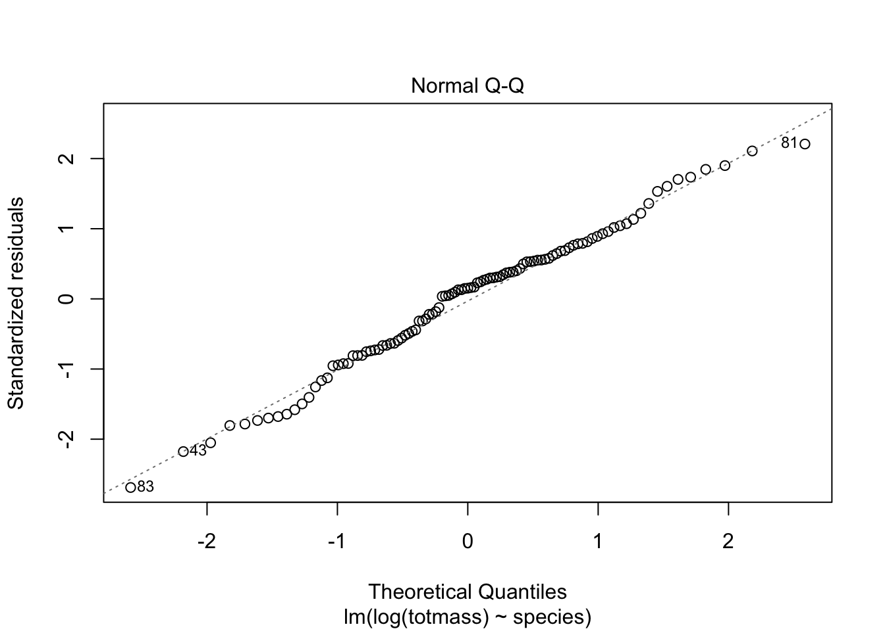
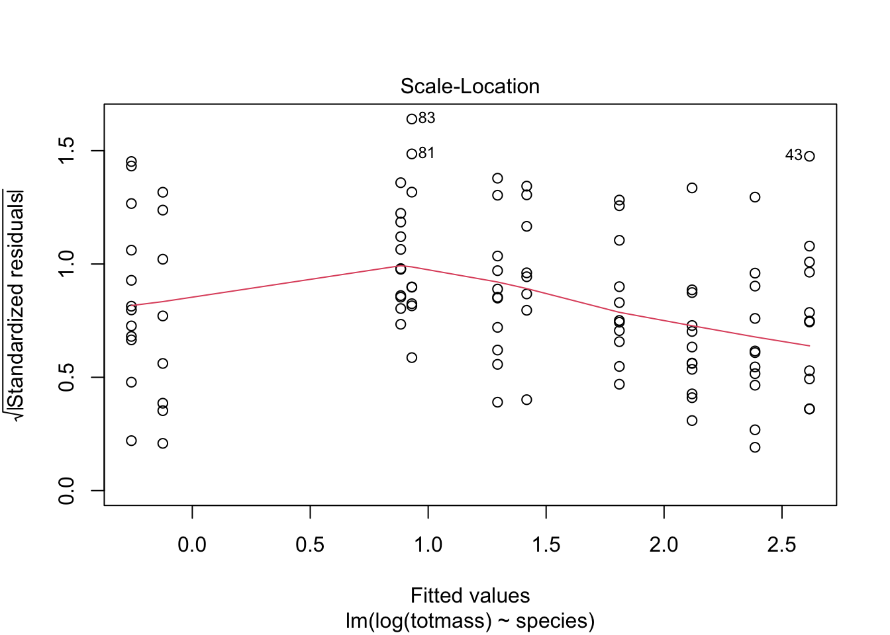
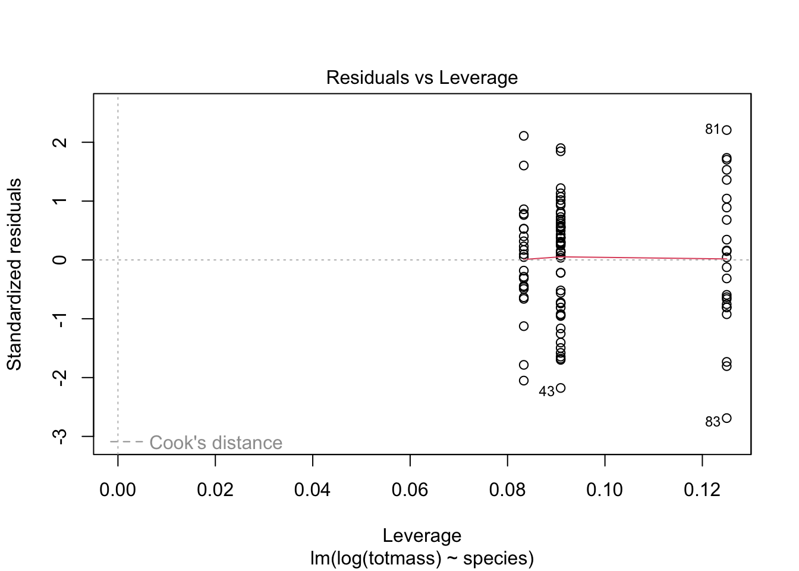
Code
check_normality(model2_log)
OK: residuals appear as normally distributed (p = 0.374).
Code
check_heteroscedasticity(model2_log)
OK: Error variance appears to be homoscedastic (p = 0.100).
Model with predictor variable: feedlevel
Code
#New linear regression model with feedlevel are predictormodel3_log <-lm(log(totmass)~ feedlevel, data = plant_subset)
check assumptions for model 3:
Code
#plot the model and check for normality and heteroscedasticityplot(model3_log)
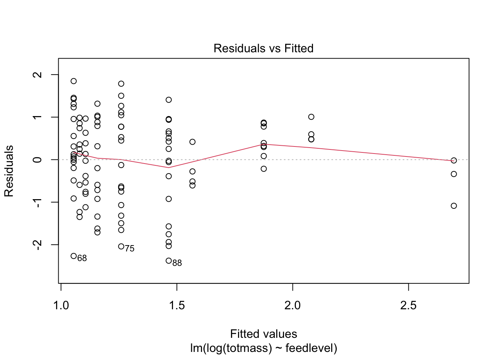
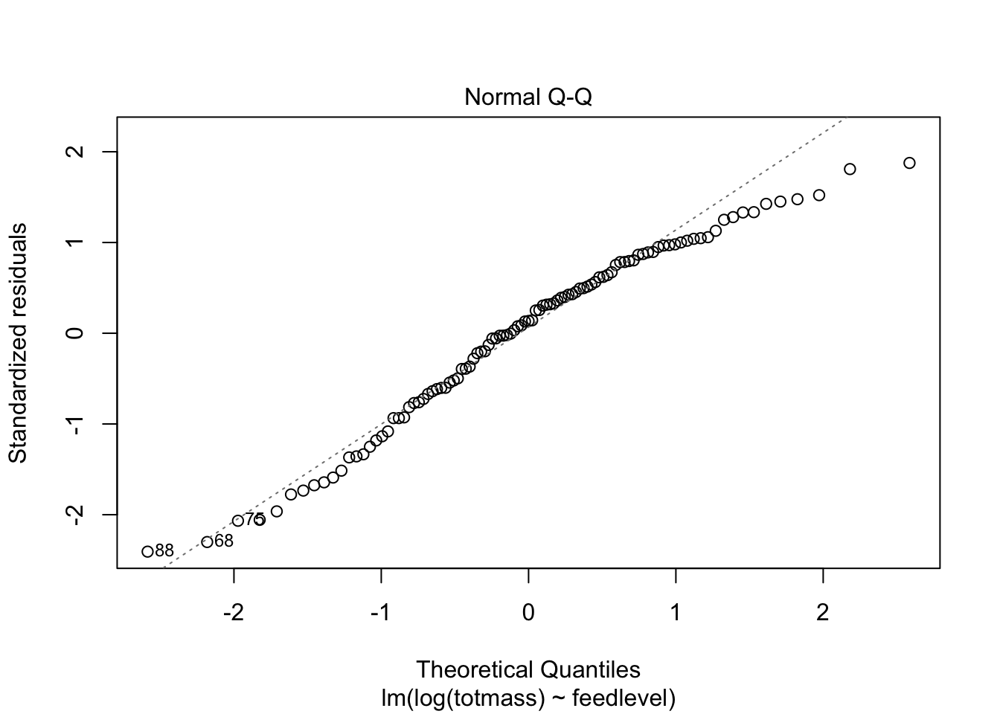
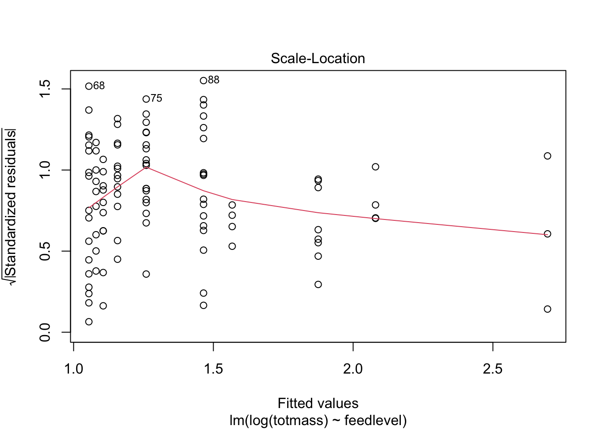
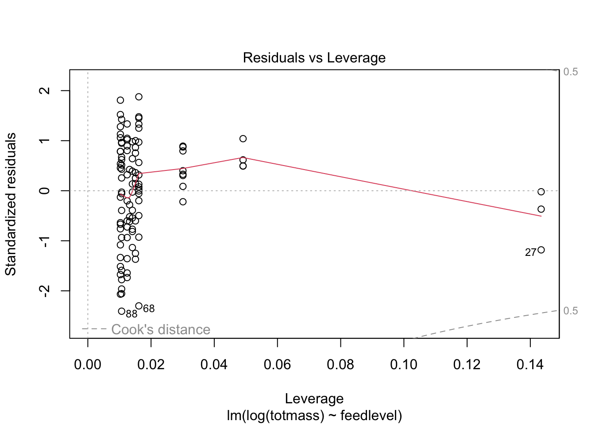
Code
check_normality(model3_log)
Warning: Non-normality of residuals detected (p = 0.018).
Code
check_heteroscedasticity(model3_log)
OK: Error variance appears to be homoscedastic (p = 0.261).
Model with predictor variable: num_lvs
Code
#New linear regression model with num_lvs are predictormodel4_log <-lm(log(totmass)~ num_lvs, data = plant_subset)
check assumptions for model 4:
Code
#plot the model and check for normality and heteroscedasticityplot(model4_log)
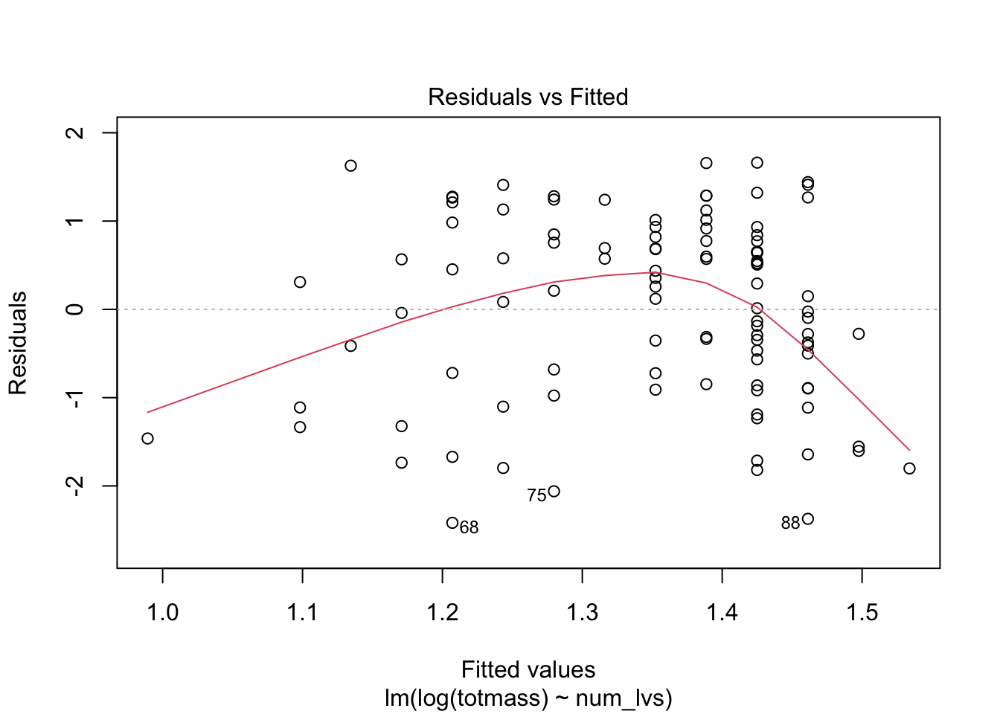
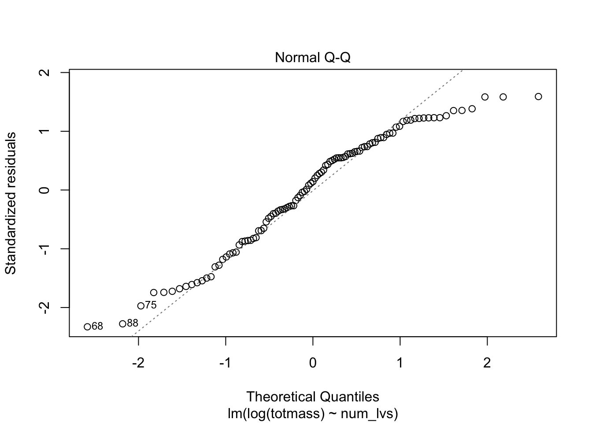
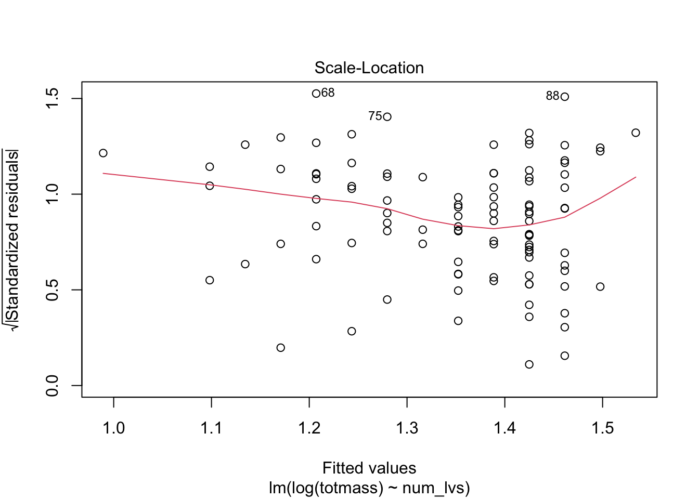
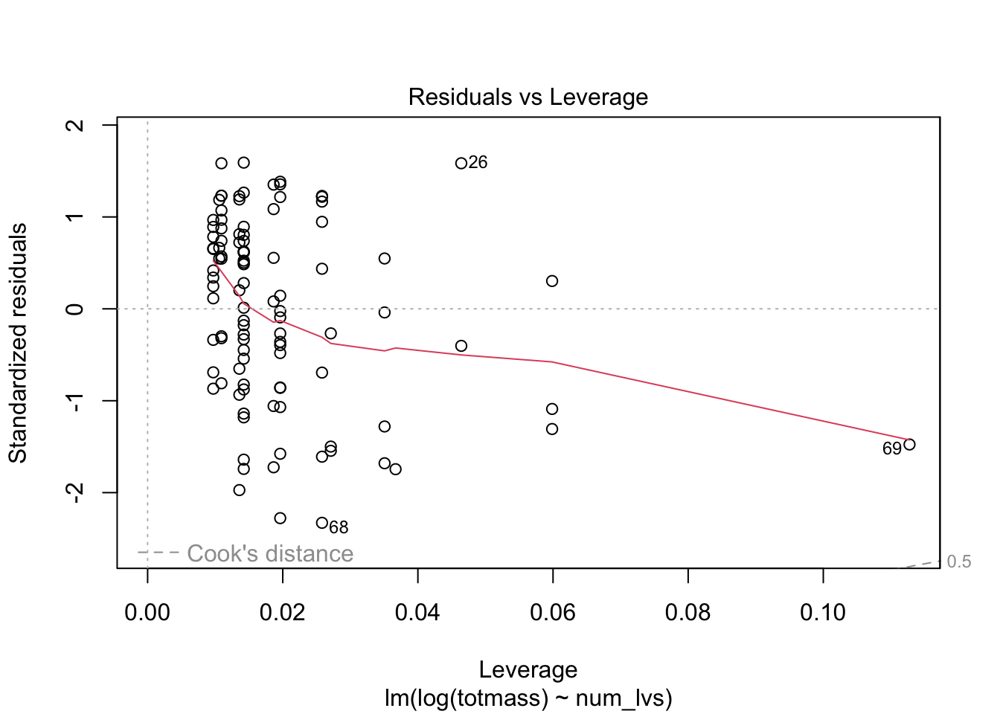
Code
check_normality(model4_log)
Warning: Non-normality of residuals detected (p = 0.002).
Code
check_heteroscedasticity(model4_log)
OK: Error variance appears to be homoscedastic (p = 0.370).
Variance inflation factor check for the full model with accompanying discussion
We evaluated muticollinarity by calculating the generalized variance inflation factor and determined that this model didn’t display any multicollinearity because no values were larger than 5.
We compared models using AIC and chose the model with the lowest value, which was full_log model.
Results
We found that the full_log model including species, feedlevel, sla, chlorophyll, amass, num_lvs, and num_phylls predictors best predicted totmass because the full_log model yields the lowest AIC value indicating that this model has the best predictive capacity while remaining as simple as possible. Overall, the full_log model was statistically significant (R^2= 0.8687, F(15, 87)= 38.38, p<0.001). With all else held constant, the full_log model indicates a significant relationship between totmass and num_lvs (p< 0.001). Comparing to the alabamensis species of pitcher plants, the leucophylla species are likely to have a biomass that is 1.7 higher (95% confidence level, [1.25, 2.16]) and the psittacina species are likely to have a biomass that is 1.6 lower (95% confidence level, [-2.05,-1.23]). However it was found that some of the predictors such as, the jonesii and purpurea species, amass, and num_phylls, did not significantly predict totmass (p= 0.107, p=0.155, p= 0.436, p= 0.446, respectively). In conclusion, our model highlights that variables such as number of leaves, feed level, specific leaf area, chlorophyll, and specific species type (lata, flava, leucophylla, minor, psittacina, rosea, and rubra) are all significant variables in predicting the biomass of one individual pitch plant. Focusing on the number of leaves, individuals producing more pitchers and phyllodes will predictably accumulate more biomass than individuals who produce less pitches and phyllodes.
Code
#create a summary table with summary statisticssummary(full_log)
#use ggpredict() to back transform estimates and save it as an object called "model_pred"model_pred <-ggpredict(full_log, terms ="num_lvs", back.transform =TRUE)#plot "model_pred" object plot(model_pred, add.data =TRUE)
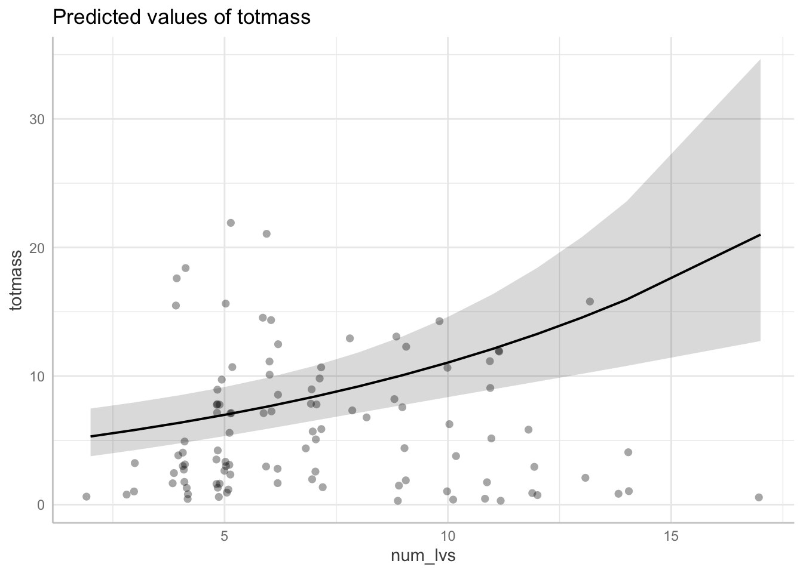
Caption: We used the ggpredicts function to predict biomass from the predictor variable num_lvs. We did by computing back transformating the predictor variable num_lvs to create an estimate for biomass. We found a postive correlation between the predictor variable, num_lvs, and the response variable, totmass, indicating that as the number of leaves increases, so does biomass.
Code
table <-tidy(full_log, conf.int =TRUE) %>%#using mutate to change the pvalue numbers if they are really small#using mutate to chnage the estimates, standard error, and t-statistics to round to 4 digitsmutate(across(estimate:conf.high,~round(.x,digits=4))) %>%mutate(statistic=round(statistic, digits =1)) %>%mutate(p.value=case_when(p.value<0.001~"<0.001",.default =as.character(p.value))) %>%#fix this#make it into a flex table flextable() %>%set_header_labels(term="Term",estimate="Estimate",std.error="Standard Error",statistic="Statistic",p.value="p-value",conf.low="Lower Confidence Level",conf.high="High Confidence Level") %>%# fit it to the viewer autofit()table
Term
Estimate
Standard Error
Statistic
p-value
Lower Confidence Level
High Confidence Level
(Intercept)
-1.3390
0.5977
-2.2
0.0276
-2.5271
-0.1510
speciesalata
1.1132
0.1840
6.0
<0.001
0.7474
1.4789
speciesflava
1.4046
0.2630
5.3
<0.001
0.8819
1.9272
speciesjonesii
0.3197
0.1964
1.6
0.1073
-0.0708
0.7101
speciesleucophylla
1.7090
0.2276
7.5
<0.001
1.2566
2.1614
speciesminor
0.3893
0.1879
2.1
0.0412
0.0158
0.7628
speciespsittacina
-1.6452
0.2070
-7.9
<0.001
-2.0567
-1.2337
speciespurpurea
-0.3643
0.2544
-1.4
0.1556
-0.8700
0.1413
speciesrosea
-0.9474
0.2605
-3.6
<0.001
-1.4651
-0.4296
speciesrubra
0.8753
0.1964
4.5
<0.001
0.4851
1.2656
feedlevel
-0.4743
0.2345
-2.0
0.0462
-0.9403
-0.0082
sla
-0.0025
0.0012
-2.1
0.0344
-0.0048
-0.0002
chlorophyll
0.0044
0.0012
3.7
<0.001
0.0020
0.0067
amass
0.0023
0.0030
0.8
0.4362
-0.0036
0.0083
num_lvs
0.0918
0.0224
4.1
<0.001
0.0472
0.1363
num_phylls
-0.0396
0.0517
-0.8
0.4461
-0.1424
0.0632
Bibliography
Cochran-Stafira, D.L. and von Ende, C.N. (1998), INTEGRATING BACTERIA INTO FOOD WEBS: STUDIES WITH SARRACENIA PURPUREA INQUILINES. Ecology, 79: 880-898. doi (Accessed 2023-06-04).
Ellison, A. and E. Farnsworth. 2021. Effects of Prey Availability on Sarracenia Physiology at Harvard Forest 2005 ver 18. Environmental Data Initiative. doi (Accessed 2023-06-04).
Farnsworth, Elizabeth J., and Aaron M. Ellison. “Prey Availability Directly Affects Physiology, Growth, Nutrient Allocation and Scaling Relationships among Leaf Traits in 10 Carnivorous Plant Species.” Journal of Ecology, Vol. 0, No. 0, 2007, doi (Accessed 2023-06-04).
Horner, John D., Steele, Cross J., Underwood, Christopher A., Lingamfelter, Daniel. “Age-Related Changes in Characteristics and Prey Capture of Seasonal Cohorts of Sarracenia alata Pitchers.” The American Midland Naturalist, Vol. 167, No. 1, 2012, doi (Accessed 2023-06-04).